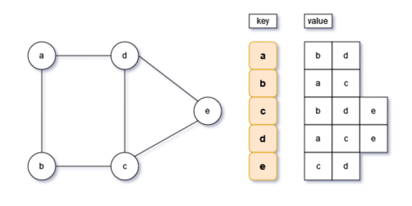
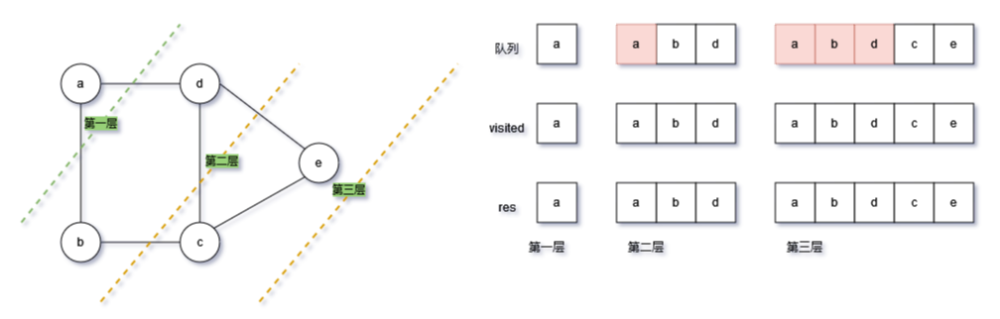
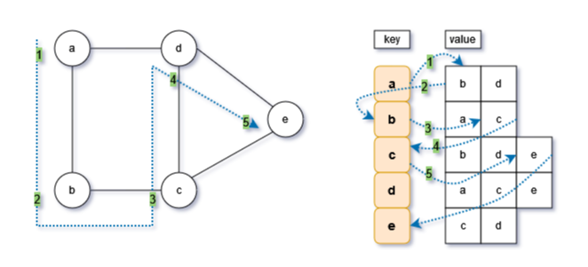

Python无向图遍历

无向图的遍历同二叉树类似，也分为广度优先和深度优先两种方式，其逻辑和原理也是一样的。
本次以无向图邻接表为基础，实现无向图的两种遍历方式。
关于无向图的邻接表实现，请看上一节：Python无向图邻接表实现
一、广度优先遍历

广度优先遍历以队列为基础进行实现，在实现的过程中，同二叉树类似，按层进行遍历。
实现步骤为：
从输入的顶点（起始顶点）开始，从根据顶点的健获取键值，即获取顶点的邻接的全部顶点（按层访问），然后加入队列（append），同时记录已经放问过visited
从队列中弹出一个顶点，重复以上步骤，将邻接的顶点加入队列。注意，这里就需要加入队列前进行一个判断，此顶点是否已经访问过，已经访问的顶点不再加入队列：
if sub_vert in visited: continue直到字典的全部顶点已经访问，即队列长度为0:
while len(que) > 0:广度优先遍历的核心：一是用队列来按层添加后续访问的顶点；二是要记录已经访问的顶点，不再加入队列。
同时要理解set的特性以及用法
# 广度优先遍历，通过队列方式实现
def bfs(graph: GraphList, start_vert: str):
res = []
# 集合和队列存储顶点，均为str类型，做个注解
visited = set[str]([start_vert])
que = deque[str]([start_vert])
# 获取顶点的邻接顶点，如果没有被访问，就添加至队列中，直到队列元素全部被访问完毕
# 前提条件是所有节点之间有相连的边，如果有未连接的节点，则无法遍历。
while len(que) > 0:
vert = que.popleft()
res.append(vert)
# graph_list就是存储图的字典，根据健获取键值，键值是一个列表
for sub_vert in graph.graph_list[vert]:
# 如果该顶点已经放问过，则继续循环不甜加至队列
if sub_vert in visited:
continue
que.append(sub_vert)
visited.add(sub_vert)
return res
二、深度优先遍历

深度优先队列在前面二叉树中已经做个简单介绍：Python二叉树的遍历，同样使用递归的方式实现。
递归的使用，也在前面小节：Python递归算法及其简单应用，其应用的核心是要找到边界条件（终止条件），在无向图的森度优先遍历中，字典的键值链表循环遍历结束，即表示达到来终止条件
实现步骤为：
- 从输入顶点获取邻接第一个顶点（根据字典的键值，获取列表的第一个）；
- 判断邻接的顶点是否已经访问visited，如果未访问，则重复以上步骤，即使用递归，此时逻辑是一样的，只是输入的顶点变成来另一个（邻接的顶点）
- 当遍历至最后一个无邻接顶点时，则返回（归)，返回上一步，或者继续向上返回。
这里需要注意的是，递归的终止条件是隐性的，for循环执行完毕，即返回。
# 深度优先遍历，使用递归方式实现
# 为列便于理解，为变量加上注解
# graph：邻接表实现的无向图
# visited：访问过顶点的集合
# res：访问的节点，这里要与visited区分，他们顺序不同的。这里注意set的属性，有兴趣可以观察set的内容和顺序
def dfs(graph: GraphList, visited: set[str], res: list[str], start_v):
visited.add(start_v)
# 经过节点即记录，前序方式
res.append(start_v)
# 递归边界条件（终止条件），这里是一种隐性的写法，for循环终止列，即退回到上一步
for v in graph.graph_list[start_v]:
if v in visited:
continue
# 对连接的新顶点继续遍历
dfs(graph, visited, res, v)
三、全部代码
# 无向图遍历
from collections import deque
from graph_list import GraphList
# 广度优先遍历，通过队列方式实现
def bfs(graph: GraphList, start_vert: str):
res = []
# 集合和队列存储顶点，均为str类型，做个注解
visited = set[str]([start_vert])
que = deque[str]([start_vert])
# 获取顶点的邻接顶点，如果没有被访问，就添加至队列中，直到队列元素全部被访问完毕
# 前提条件是所有节点之间有相连的边，如果有未连接的节点，则无法遍历。
while len(que) > 0:
vert = que.popleft()
res.append(vert)
# graph_list就是存储图的字典，根据健获取键值，键值是一个列表
for sub_vert in graph.graph_list[vert]:
# 如果该顶点已经放问过，则继续循环不甜加至队列
if sub_vert in visited:
continue
que.append(sub_vert)
visited.add(sub_vert)
return res
# 深度优先遍历，使用递归方式实现
# 为列便于理解，为变量加上注解
# graph：邻接表实现的无向图
# visited：访问过顶点的集合
# res：访问的节点，这里要与visited区分，他们顺序不同的。这里注意set的属性，有兴趣可以观察set的内容和顺序
def dfs(graph: GraphList, visited: set[str], res: list[str], start_v):
visited.add(start_v)
# 经过节点即记录，前序方式
res.append(start_v)
# 递归边界条件（终止条件），这里是一种隐性的写法，for循环终止列，即退回到上一步
for v in graph.graph_list[start_v]:
if v in visited:
continue
# 对连接的新顶点继续遍历
dfs(graph, visited, res, v)
if __name__ == "__main__":
verts = ['a', 'b', 'c', 'd', 'e']
edges = [['a', 'b'], ['a', 'd'], ['b', 'c'], ['c', 'd'], ['c', 'e'], ['d', 'e'], ]
graph = GraphList(verts, edges)
print(graph.graph_list)
print(bfs(graph, 'a'))
dfs_res = []
visited = set[str]()
dfs(graph, visited, dfs_res, 'a')
print(dfs_res,visited)